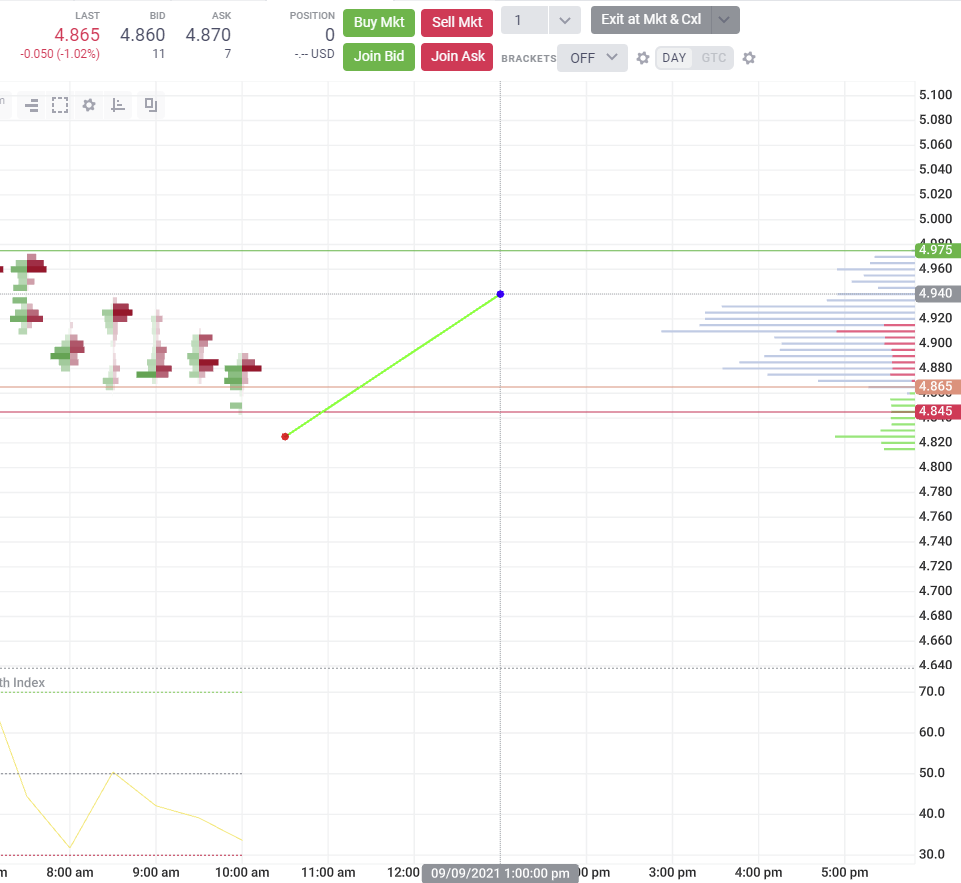
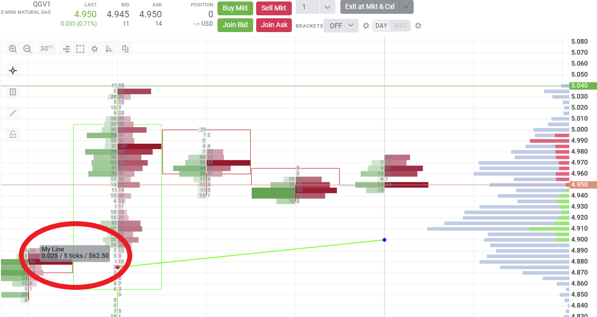

Custom Drawing Tools
Custom Drawing Tools Basics
Custom Drawing Tools allow us to easily create and share custom user-defined drawing tools for use in the Trader application. Defining a custom drawing tool is very similar to defining a custom indicator. We need to create an object that obeys the DrawingToolImplementation interface, as well as export an object that obeys the DrawingTool interface. Let's look at each:
const MyLine = {
//...DrawingToolImplementation methods go in here.
}
module.exports = {
name: 'MyLine', //a unique identifier for the tool
description: 'My Line', //the UI displayed name of the tool
drawing: MyLine, //the object that implements DrawingToolImplementation
params: { //like indicators, these are user defined parameters
maxPeriod: predef.paramSpecs.period(14)
},
tags: ['My Tools'], //a way to group drawing tools in the UI
minN: 2, //the minimum number of anchors
maxN: 2 //the maximum number of anchors
}
We can see from this example how to define a Custom Drawing Tool at the module.exports level - we need at least the name and drawing fields. The most important field is the drawing. This is where we define our DrawingToolImplementation methods. Let's explore those methods now.'
const MyLine = {
//initializes the `state` parameter of the Drawing Tool.
init() {
return {/*any arbitrary state, this doesn't even have to be an object*/}
},
//graphic items to render associated with this Drawing Tool. The parameter object is
//available to all of the DrawingToolImplementation functions.
render({anchors, props, state, plots}) {
return {
items: [ /* we can put DisplayObjects in here */ ]
}
},
//we can change our state parameter using update. A common use case would be to perform a big calculation
//and store it in state only when necessary to improve performance and decrease resource usage.
update({anchors, props, state, plots}) {
if(someCondition) {
return { newState: { value: 'myNewValue' } }
}
},
//holding the SHIFT key over a drawing reveals its tooltip. We can determine how
//the tooltips render with the toopltips function
tooltips({anchors, props, state, plots}) {
return [
//DrawingTooltip items go here
]
},
//controls the X and Y coordinate space that is valid for the anchor at the matching position in the array.
//anchors[0] will be allowed to move 10 units in the X axis, anchors[1] will be able to move 5 units in the Y axis.
//If there is no X or Y value listed, there will be no restraint placed on the anchor's valid coords.
anchorRestraints() {
return [
{/*zeroth position anchor*/x: 10 },
{/*first position anchor*/y: 5 }
]
},
//controls the color of each anchor at the matching position in the array.
//anchors beyond the index accounted for in this array will default to the tail color,
//in this case 'blue'
anchorStyles() {
return [
{/*zeroth position anchor*/color: 'red' },
{/*first position anchor*/color: 'blue' },
]
}
}
You can see that each of these functions controls some aspect of the tool. Let's do something simple and draw a line between two points using the render function.
const MyLine = {
render({anchors}) {
return {
items: [
{
tag: 'LineSegments',
key: 'line',
lines: [
{
tag: 'Line',
a: anchors[0],
b: anchors[1]
}
],
lineStyle: {
lineWidth: 2,
color: '#0f0'
}
}
]
}
},
}
Now if we choose 'My Line' from the drawing tools selector, we should be able to draw a line between two points.

This is a very simple line drawing tool. Let's take it a step further and add a tooltip. When viewing a Drawing Tool that you've drawn onto a chart, you may mouse over it holding the SHIFT key to reveal its tooltip. If you don't define tooltip behavior, nothing will happen. Let's make a tooltip that renders some text and a special delta object.
const MyLine = {
//...
tooltips({anchors}) {
//returns an array of DrawingTooltip items
return [
{
coord: anchors[0], //coord tells the tooltip where to render in chart space. An anchor's point is a typical choice
alignment: { //the alignment tells the tooltip how to align itself
tag: 'predef',
x: 'left',
y: 'above'
},
items: [
{
content: "My Line",
},
{
content: {
delta: anchors[1].y.value - anchors[0].y.value
}
}
]
}
]
}
//...
}
When we hold SHIFT over our drawing now, it will display 'My Line' and the tick delta information between the two points anchors[0] and anchors[1]. Try moving it around to see how it changes.

Generated using TypeDoc